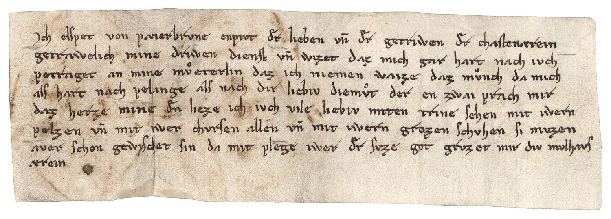

BayHStA, Angerkloster München Urkunde, 49



Kommentar
Editor: ellen.bosnjak@textgrid.de
Archiv: BayHStA
Bestand: Angerkloster München Urkunde
Signatur: 49
Ort:
Datum: nach 1309 März 21
Schlagwort: Privatbrief
Schwierigkeitsgrad: mittel
Kurzbetreff:
Schreiben der Elsbeth von Baierbrunn an die Kastnerin Diemut
Schreiben der Elsbeth von Baierbrunn an die Kastnerin Diemut
Schreiberhände:
- (S1)
Kommentar:
Privatschreiben der Elisabeth von Baierbrunn an die Kastnerin Diemut auf kleinformatigem Pergament. Es handelt sich um den ältesten im Original erhaltenen deutschsprachigen Privatbrief.
Gotische Minuskel mit wenigen Relikten der diplomaten Minuskel (langes s auf der Grundlinie nach links umgebogen oder die Grundlinie schneidend, p mit nach rechts umgebogener Unterlänge, Zierstrich auf der Zunge des r), ae-Ligatur und auffälliger de-Ligatur.
Vgl. Die Fürstenkanzlei des Spätmittelalters, Nr. 139, S. 130; Schrift-Stücke, Nr. 12, S. 40.
Privatschreiben der Elisabeth von Baierbrunn an die Kastnerin Diemut auf kleinformatigem Pergament. Es handelt sich um den ältesten im Original erhaltenen deutschsprachigen Privatbrief.
Gotische Minuskel mit wenigen Relikten der diplomaten Minuskel (langes s auf der Grundlinie nach links umgebogen oder die Grundlinie schneidend, p mit nach rechts umgebogener Unterlänge, Zierstrich auf der Zunge des r), ae-Ligatur und auffälliger de-Ligatur.
Vgl. Die Fürstenkanzlei des Spätmittelalters, Nr. 139, S. 130; Schrift-Stücke, Nr. 12, S. 40.
Entzifferung
(Absatz Beginn)
1 Jch elspet von pæierbrvne enpivt der lieben vn(d) der getriwen der chastenærein
2 getrawelich mine driwen dienst vn(d) wizet daz mich gar hart nach ivch
3 petraget an mine meterlin daz ich niemen waize daz mnch da mich
4 als hart nach pelange als nach dir liebiv diemt der en zwai prach mir
5 daz herze mine den lieze ich ivch vile liebiv miten trine sehen mit iwern
6 pelzen vn(d) mit iwer chvrsen allen vn(d) mit iwern grozen schvhen si mvzen
7 aver schon gewischet sin da mit plege iwer der svze got grvzet mir div mvlhavs
8 ærein
(Absatz Ende)
Transkription
(Absatz Beginn)
1 Jch, Elspet von Paeierbrvne, enpivt der lieben vnd der getriwen, der chastenaerein,
2 getrawelich mine driwen dienst. Vnd wizet, daz mich gar hart nach ivch
3 petraget an mine meterlin, daz ich niemen waize daz mnch, da mich
4 als hart nach pelange, als nach dir, liebiv Diemt. Der enzwai prach mir
5 daz herze mine, den lieze ich ivch vile liebiv miten trine sehen mit iwern
6 pelzen vnd mit iwer chvrsen allen vnd mit iwern grozen schvhen; si mvzen
7 aver schon gewischet sin. Damit plege iwer der svze got. Grvzet mir div Mvlhavs-
8 aerein.
(Absatz Ende)